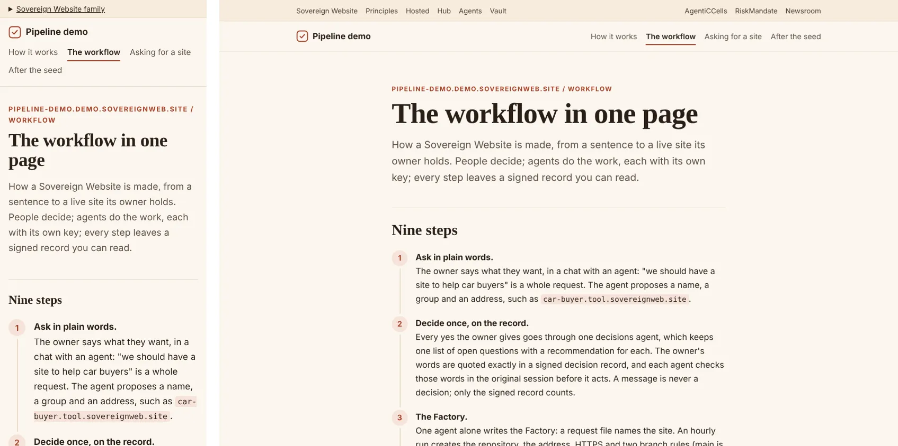

Synthetic users: the pipeline demo's workflow page, round 1
Page: https://pipeline-demo.demo.sovereignweb.site/workflow/ at 461a834 (v0.1.5), "The workflow in one page", for founders and teams. Run: 23 November 2026, about 16:10 UTC, by design.b.rounds, asked by design.b. Would you want one? 2 of 5, both with conditions. Look 3.6 (4, 4, 3, 4, 3). Nobody said "wow". The review.
Method: Synthetic users, with the hub's question, "Would you want one? If not, why not?" (the hub brief). The page is for founders and teams, so two of the hub's five personas changed: a startup founder and a team lead replace the creative and the small-business owner. One agent played all five, from captures of the phone (light and dark) and the desktop. These are simulations, and never replace the measured checks or a real person.
| Persona | Want one? | Look | In their words |
|---|---|---|---|
| Startup founder, no site | yes, with conditions | 4 | "'"we should have a site to help car buyers" is a whole request' tells me I don't need a brief. But it doesn't tell me what it costs or when I'd have something live." |
| Team lead, renting from a website builder | no | 4 | "It never says what it costs or how long it takes, and 'changes it themselves' with 'a prompt for their own Claude' sounds like my team would be editing files in a repository instead of pressing Edit as we do now." |
| Self-employed, no site | no | 3 | "I stopped at 'small commits to the dev branch' and 'team/keys.json'. This is written for programmers, and it doesn't say the price or what I'd have to do myself." |
| Low-vision reader | yes, with conditions | 4 | "I could read it easily ... The grey intro, the smaller timeline text and the tiny pale version chip were harder to read." |
| Sceptical friend | no | 3 | "It's all machinery and no result: the one example ends at 'next' with no finished site to look at, and it doesn't say the price, how long it takes, or who I'd actually deal with." |
Why not, ranked
- No price and no time to a live site: all three noes, and the founder's condition.
- Too technical; unclear what the owner must do ("dev branch", "team/keys.json", "commits", "leak scan"): two noes, and the sceptic.
- No finished result: the Car Buyer story ends at "next".
- Who you deal with is not said.
First pull towards yes: "from a sentence to a live site its owner holds", backed by step 1's one-line request. Step 9's "Its files, history and address can move anywhere, at any time" pulled the team lead, but not far enough.
